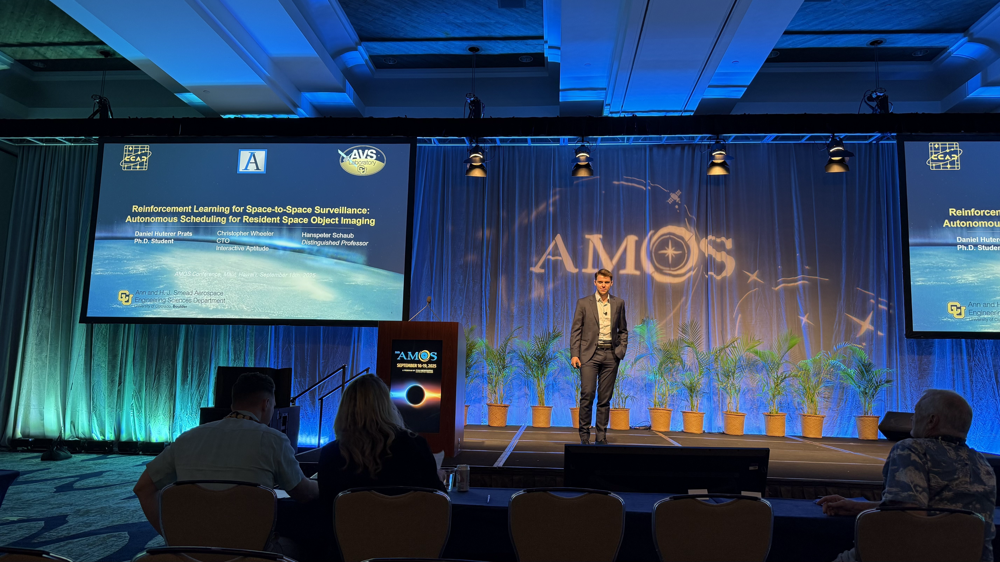
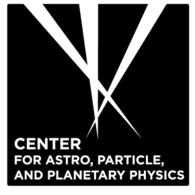
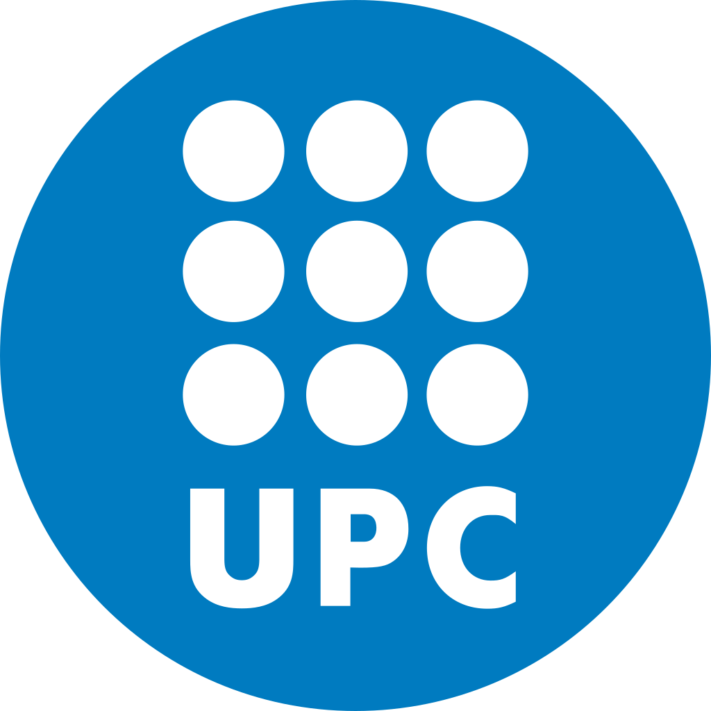
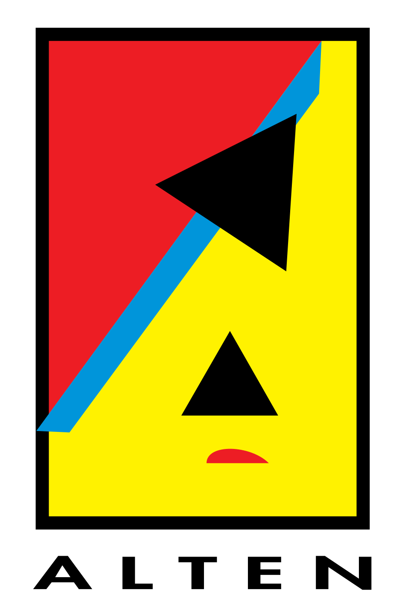
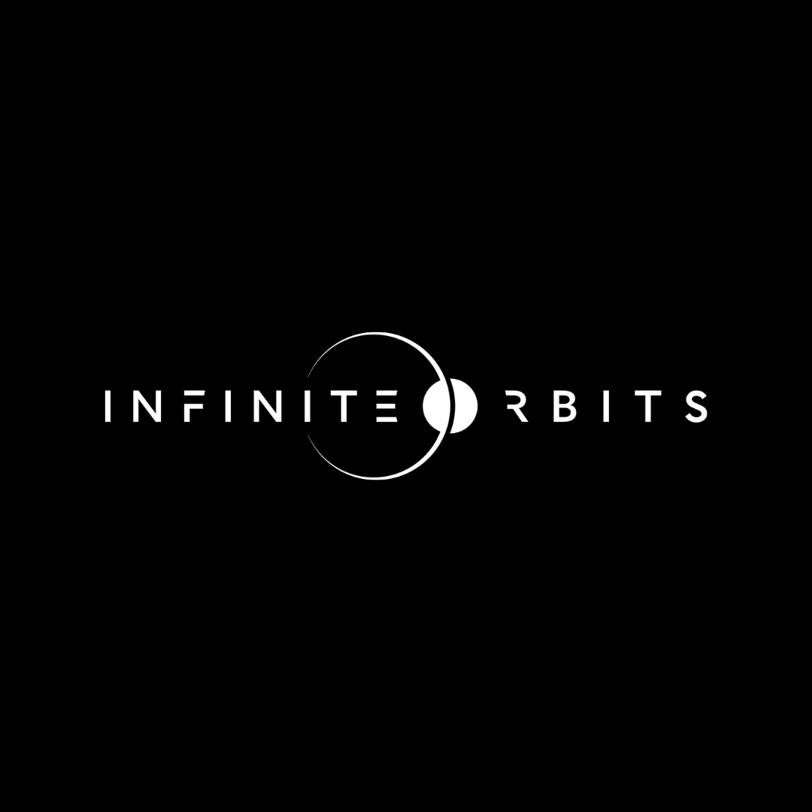
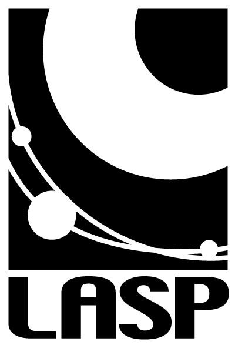
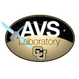
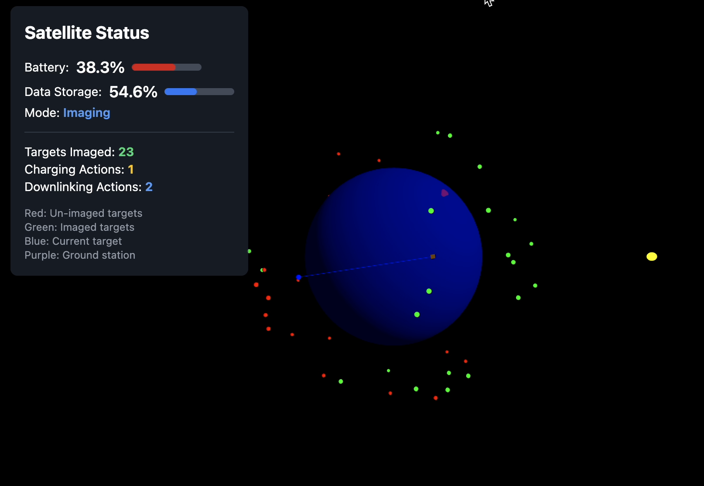
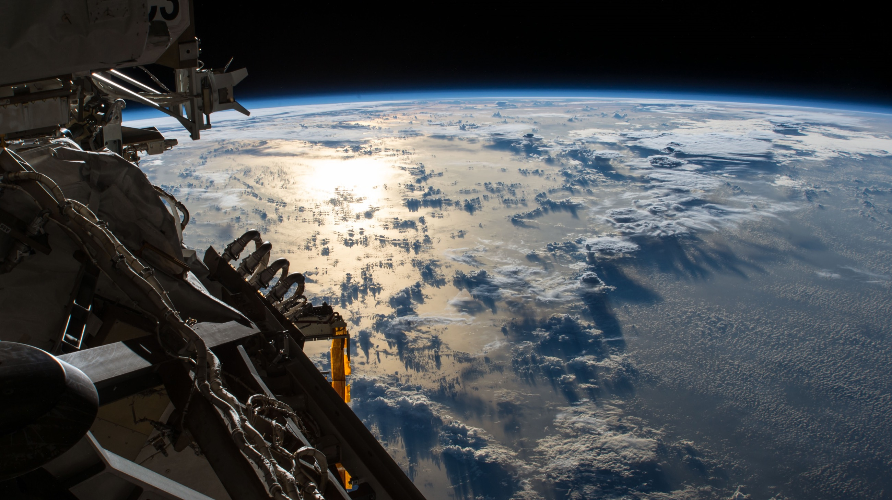

AMOS 2025 • Conference
RL for LEO-to-LEO Space-to-Space Imaging
Actor-critic scheduling for autonomous imaging in LEO under downlink latency, LOS, power, storage, and pointing constraints.
Autonomous Space Ops - Astrodynamics - Machine Learning
PhD student in Aerospace Engineering at CU Boulder AVS Lab, building autonomous scheduling and inspection systems for spacecraft operations under real mission constraints.
My work combines reinforcement learning, orbital mechanics, and safety-aware planning to support scalable on-orbit decision-making for surveillance, servicing, and exploration missions.
Chronological path across research and industry. Scroll to reveal each step; organization names link to official pages.

NYUAD Galaxy Formation Group Undergraduate Research Assistant - Abu Dhabi, UAE - May 2019 to Jun 2023
Analyzed NIHAO galaxy simulations and tidal stripping effects to study dark matter and baryonic structure evolution across dwarf galaxies.
NYU Abu Dhabi Lead Project Engineer / Summer Research Assistant - Abu Dhabi, UAE - Jun 2021 to Aug 2022
Led high-power rocketry development and built ML-ready planetary-science data pipelines for atmospheric opacity and temperature-pressure modeling.

UPC Space Systems Lead + Astrodynamics Research - Barcelona, Spain - Sep 2022 to Jul 2023
Led wildfire-tracking mission design and developed a multi-gravity-assist optimization tool balancing transfer delta-v and arrival time.

ALTEN Aerospace Consultant - Toulouse, France - Aug 2023 to Jan 2024
Owned ESSP FastMon updates and GNSS monitoring pipelines, and contributed to aerodynamics optimization work for Olympic track cycling.

Infinite Orbits Systems Engineer and Project Coordinator - Toulouse, France - Jan 2024 to Aug 2024
Led systems engineering and project coordination for a European Commission OTV consortium, including rendezvous and docking safety concepts.

Laboratory for Atmospheric and Space Physics GNC Engineer - Boulder, CO - Aug 2024 to Jan 2025
Simulated open/closed-loop maneuvers for the Emirates Mission to the Asteroid Belt and ran Monte Carlo analyses for gravity-assist and flyby scenarios.

Autonomous Vehicle Systems Lab Graduate Research Assistant - Boulder, CO - Aug 2024 to Present
Developing Basilisk RL environments for LEO-to-space surveillance and autonomous scheduling with strict safety and illumination constraints.
Highlighted conference papers and core projects, with expandable previews for selected works.

Actor-critic scheduling for autonomous imaging in LEO under downlink latency, LOS, power, storage, and pointing constraints.

Extends autonomous imaging beyond same-regime targeting with resource-aware actions and latency-aware downlink behavior.
Live ISS orbital context with global journey city markers, plus a weekly space image feed.
Interactive 3D-style globe with live ISS motion, real telemetry, and pins for Boulder plus places where you've lived, studied, and worked.
Above-horizon now from tracked cities: --
Latitude--
Longitude--
Altitude--
Velocity--
Updated--
Refresh~4s
Curious about ISS visibility from your location?
Type a city name, or use City, Country for ambiguous places (for example: London, UK).
Enter a location to check current visibility and the next viewing window.
Automatically refreshed from NASA APOD, with a local fallback visual when APIs are unavailable.
